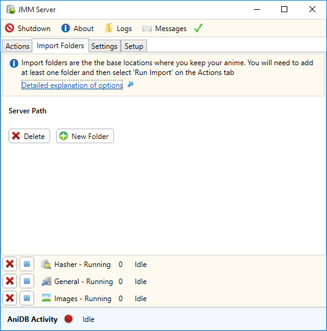

JMM Server - Import Folders Tab
The Import Folders section is the core of JMM Server and the way you manage the physical location of your collection. At least one folder is required before you can start using any JMM program or plugin.

Click New Folder to add an import folder to your collection.
A new window will open asking you for the physical or networked location. You'll also be presented with three different options, Drop Source, Drop Destination and Watch For New Files which are explained below.
- Drop Source - If you put any files here they will be moved to either the Drop Destination or an existing folder. If you have files for that series, they will be moved to that existing folder. If it is the first file in a new series, a folder will be created in the Drop Destination and moved there.
- Drop Destination - Files for new series will be moved here. You can have only one folder as the Drop Destination
- Watch For New Files - If selected JMM Server will detect when new files are added to this folder, and automatically add them to your collection
How Long Will Importing Take
Every file you add needs to be hashed before it can be added to your collection. The exact amount of time depends on your hard drive and processor speed though on average though it takes about 1 hour to process 80GB.
Hashing benchmarks on External USB 2.0 Drive
File Size: 520MB
Using Hasher.dll
ED2k Hash only = 18 seconds
ED2k+CRC32+MD5+SH1 = 24 seconds
NOT Using Hasher.dll
ED2k Hash only = 20 seconds
ED2k+CRC32+MD5+SH1 = 28 seconds
Hashing benchmarks on Internal Drive
File Size: 520MB
Using Hasher.dll
ED2k Hash only = 6 seconds
ED2k+CRC32+MD5+SH1 = 24 seconds
NOT Using Hasher.dll
ED2k Hash only = 20 seconds
ED2k+CRC32+MD5+SH1 = 28 seconds